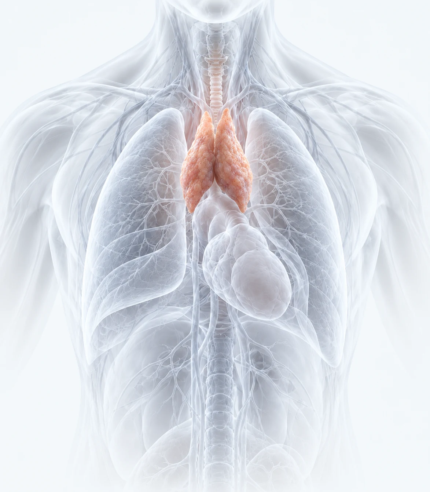

RESEARCH CONTEXT
Age-Related Immune Changes
Immune decline associated with aging.
BIOTECHNOLOGY RESEARCH
Regulina-T™ is a biotechnology research platform focused on thymus biology and immune system regulation.
RESEARCH & DEVELOPMENT
Conceptual visualization
01 / THYMUS BIOLOGY
Illustrative anatomyTHE SCIENTIFIC CONTEXT
The thymus is a central organ of the immune system where T-cells are formed and mature.
These cells represent the foundation of adaptive immunity and allow the body to recognize infections, maintain immune balance and provide immune protection.
02 / SCIENTIFIC FOUNDATION
Regucalcin / SMP30
The interactive view is unavailable on this device. Explore the research context alongside it.Illustrative protein model · Not an experimentally determined RGN-T1™ structure.
REGUCALCIN / SMP30
The scientific concept of the platform includes research into the biological role of the protein Regucalcin (SMP30).
Regucalcin participates in the regulation of cellular metabolism, calcium homeostasis and intracellular stability.
03 / BIOTECHNOLOGY PLATFORM
Regulina-T™ is developed as a biotechnology research platform in the field of regenerative immunology.
The platform focuses on biotechnology approaches related to thymus regeneration and immune regulation.
RECOMBINANT TECHNOLOGY
A foundation for further research.
04 / POTENTIAL RESEARCH DIRECTIONS
Research related to thymus biology and immune regulation connects to several areas of modern medicine.
RESEARCH CONTEXT
Immune decline associated with aging.
RESEARCH CONTEXT
Mechanisms of immune dysregulation.
RESEARCH CONTEXT
Restoration of immune competence.
RESEARCH CONTEXT
Immune system balance in oncology contexts.
RESEARCH CONTEXT
Rebuilding immune defense after transplantation.
These areas are research directions, not confirmed therapeutic indications or established clinical applications of RGN-T1™.
05 / OUR PURPOSE
Regulina-T™ is a biotechnology platform focused on thymus biology and immune system regulation.
The thymus is a central organ of the immune system where T-cells are formed and mature, forming the foundation of adaptive immunity.
The video could not be loaded. Open the video directly.
The mission of Regulina-T™ is to advance research in thymus biology and support the development of biotechnology approaches related to immune system balance.
06 / PARTNERSHIP
Regulina-T™ welcomes collaboration with pharmaceutical companies, scientific institutes and biotechnology organizations.
The platform is open to partnerships focused on advancing scientific research and biotechnology development related to thymus biology and immune system regulation.
Discuss a partnershipScientific Research Collaboration
Biotechnology Development Programs
Preclinical Research Initiatives
Biotechnology Platform Expansion